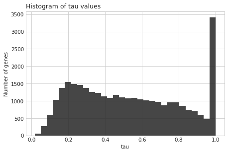
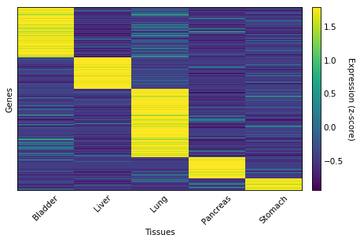
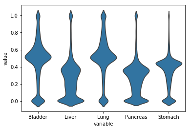
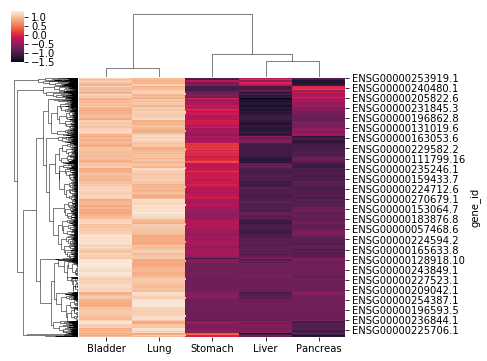
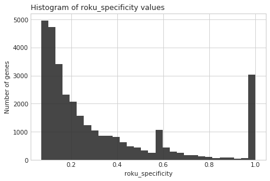
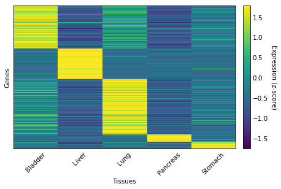

Python API
In this tutorial we will detail the usage of the Python API with real-world data, showing how to integrate tspex with popular packages such as pandas and seaborn.
Introduction
In this tutorial we are going to use data from the Genotype-Tissue Expression (GTEx) project, which provides a large catalogue of gene expression across 54 human tissues. In order to speed up the calculations and make the figures clearer, we are going to use only five tissues: Bladder, Liver, Lung, Pancreas and Stomach.
import tspex import pandas as pd import seaborn as sns
gtex_link = 'https://storage.googleapis.com/gtex_analysis_v7/rna_seq_data/GTEx_Analysis_2016-01-15_v7_RNASeQCv1.1.8_gene_median_tpm.gct.gz' expression_data = pd.read_csv(gtex_link, sep='\t', index_col='gene_id', skiprows=2) expression_data = expression_data.loc[:, ['Bladder', 'Liver', 'Lung', 'Pancreas', 'Stomach']]
We'll remove genes that are not expressed in any of the five tissues.
expression_data = expression_data.loc[(expression_data > 0).any(axis=1)]
expression_data.shape
(31872, 5)
expression_data.head()
| Bladder | Liver | Lung | Pancreas | Stomach | |
|---|---|---|---|---|---|
| gene_id | |||||
| ENSG00000223972.4 | 0.05878 | 0.06259 | 0.06655 | 0.027255 | 0.063895 |
| ENSG00000227232.4 | 14.24000 | 5.40600 | 13.68000 | 5.553000 | 9.342500 |
| ENSG00000243485.2 | 0.06097 | 0.08316 | 0.06216 | 0.034055 | 0.078575 |
| ENSG00000237613.2 | 0.04113 | 0.03354 | 0.03790 | 0.022915 | 0.043800 |
| ENSG00000268020.2 | 0.00000 | 0.02959 | 0.00000 | 0.000000 | 0.000000 |
The TissueSpecificity class
The usage of the tspex module is centered on the creation and analysis of TissueSpecificity objects. In order to create these objects, two parameters are required: (1) a pandas DataFrame containing gene expression data and (2) a tissue-specificity metric.
print(tspex.TissueSpecificity.__doc__)
Create an object of the TissueSpecificity class. Parameters ---------- expression_data : pandas.core.frame.DataFrame Pandas DataFrame containing the expression matrix, with rows corresponding to genes and columns to tissues/conditions. method : str A string representing which tissue-expression metric should be calculated. One of: 'counts', 'tau', 'gini', 'simpson', 'shannon_specificity', 'roku_specificity', 'tsi', 'zscore', 'spm', 'spm_dpm', 'js_specificity', 'js_specificity_dpm'. log : bool, default False Log-transform the expression matrix before computing tissue-specificity by taking the base-2 logarithm of one plus the expression values. By default, no transformation is performed. transform : bool, default True Transform the tissue-specificity values so that they range from 0 (perfectly ubiquitous) to 1 (perfectly tissue-specific). By default, the value is transformed. The following metrics are affected by changes in this parameter: 'gini', 'simpson', 'shannon_specificity', 'roku_specificity', 'zscore'. threshold : int or float, default 0 Value above which the gene is considered to be expressed. By default, any positive expression value is considered. Only the 'counts' metric is affected by changes in this parameter. Attributes ---------- expression_data : pandas.DataFrame Expression matrix used to compute the tissue-specificity values. If the log parameter was set to True, the values will be log-transformed. tissue_specificity : pandas.Series or pandas.DataFrame Tissue-specificity values computed from the input expression matrix.
The nonobligatory parameters (log, transform and threshold) and the object attributes (expression_data and tissue_specificity) will be explained throughout the tutorial.
Tissue-specificity metrics
tspex provides twelve different tissue-specificity metrics that can be divided into two groups:
- General scoring metrics: Describe in a single value how tissue-specific or ubiquitous is a gene across all tissues (counts, tau, gini, simpson, shannon_specificity, roku_specificity, spm_dpm and js_specificity_dpm).
- Individualized scoring metrics: Quantify how specific is the expression of each gene to each tissue (tsi, zscore, spm and js_specificity).
Example 1: General scoring metric
In this example we are going to quantify the tissue-specificity of each gene using the Tau metric, which is a general scoring metric. Therefore, we will get a single tissue-specificity score per gene.
When creating a TissueSpecificity object, you can choose to log-transform the expression values before quantifying tissue-specificity.
tso = tspex.TissueSpecificity(expression_data, 'tau', log=True)
The log-transformed expression matrix is stored in the expression_data attribute, which is a regular pandas DataFrame.
tso.expression_data.head()
| Bladder | Liver | Lung | Pancreas | Stomach | |
|---|---|---|---|---|---|
| gene_id | |||||
| ENSG00000223972.4 | 0.057117 | 0.060709 | 0.064429 | 0.026890 | 0.061937 |
| ENSG00000227232.4 | 2.723924 | 1.857235 | 2.686486 | 1.879923 | 2.336262 |
| ENSG00000243485.2 | 0.059184 | 0.079883 | 0.060305 | 0.033488 | 0.075641 |
| ENSG00000237613.2 | 0.040307 | 0.032990 | 0.037199 | 0.022656 | 0.042868 |
| ENSG00000268020.2 | 0.000000 | 0.029161 | 0.000000 | 0.000000 | 0.000000 |
The computed tissue-specificity values are stored in the tissue_specificity attribute that, in this case, is an one-dimensional pandas Series.
tso.tissue_specificity.head()
gene_id ENSG00000223972.4 0.1981 ENSG00000227232.4 0.1960 ENSG00000243485.2 0.2845 ENSG00000237613.2 0.2235 ENSG00000268020.2 1.0000 dtype: float64
Any of the Series' methods can be used to inspect tissue_specificity.
tso.tissue_specificity.quantile([0.5, 0.75, 0.95])
0.50 0.502950 0.75 0.761925 0.95 1.000000 dtype: float64
Two visualization methods are available in tspex: plot_histogram and plot_heatmap.
plot_histogram can be used to verify the distribution of the tissue-specificity values.
tso.plot_histogram()

Whereas plot_heatmap may be used to visualize the amount of genes that are specific for each tissue.
tso.plot_heatmap(threshold=0.8, sort_genes=True, use_zscore=True, gene_names=False)

Example 2: Individualized scoring metric
In some cases we may be interested in discovering genes that are specifically expressed in one or more tissues of interest. In this situation, general scoring metrics are not be the best choice, as they would only tell us how tissue-specific is each gene, regardless of the tissue.
Accordingly, in this example we are going to quantify the tissue-specificity of each gene using the SPM metric, an individualized scoring metric.
tso = tspex.TissueSpecificity(expression_data, 'spm', log=True)
As the SPM metric computes how specific each gene is in each tissue, the tissue_specificity attribute is a two-dimensional pandas DataFrame.
tso.tissue_specificity.head()
| Bladder | Liver | Lung | Pancreas | Stomach | |
|---|---|---|---|---|---|
| gene_id | |||||
| ENSG00000223972.4 | 0.4565 | 0.4852 | 0.5149 | 0.2149 | 0.4950 |
| ENSG00000227232.4 | 0.5235 | 0.3569 | 0.5163 | 0.3613 | 0.4490 |
| ENSG00000243485.2 | 0.4147 | 0.5598 | 0.4226 | 0.2347 | 0.5301 |
| ENSG00000237613.2 | 0.5020 | 0.4108 | 0.4633 | 0.2822 | 0.5339 |
| ENSG00000268020.2 | 0.0000 | 1.0000 | 0.0000 | 0.0000 | 0.0000 |
To inspect the distribution of the tissue-specificity values separately for each tissue, we can use the violinplot function from the seaborn package.
sns.violinplot(x="variable", y="value", inner=None, scale="count", color='C0', data=tso.tissue_specificity.melt());

The query method can be used to select genes that satisfy certain criteria. In this case, we are selecting genes that are preferentially expressed in the bladder and lung.
selected_genes_specificity = tso.tissue_specificity.query('Bladder >= 0.6 & Lung >= 0.6') selected_genes_specificity.shape
(1282, 5)
selected_genes_expression = tso.expression_data.reindex(selected_genes_specificity.index) selected_genes_specificity.head()
| Bladder | Liver | Lung | Pancreas | Stomach | |
|---|---|---|---|---|---|
| gene_id | |||||
| ENSG00000228526.2 | 0.6410 | 0.1192 | 0.6566 | 0.2270 | 0.3038 |
| ENSG00000233623.2 | 0.6775 | 0.1907 | 0.6832 | 0.1948 | 0.0000 |
| ENSG00000171819.4 | 0.7653 | 0.0433 | 0.6072 | 0.0858 | 0.1908 |
| ENSG00000202461.1 | 0.6564 | 0.0000 | 0.6383 | 0.2459 | 0.3181 |
| ENSG00000162493.12 | 0.6019 | 0.0214 | 0.6080 | 0.2072 | 0.4740 |
sns.clustermap(selected_genes_expression, figsize=(6,6), z_score=0);

Example 3: The transform parameter
When a TissueSpecificity object is created, the computed tissue-specificity values are transformed so that they fall within 0 (perfectly ubiquitous expression) and 1 (perfectly tissue-specific expression). If the user wants to obtain the untransformed values given by the chosen tissue-specificity metric, he can set the transform argument to False. The following metrics are affected by changes in this parameter: gini, simpson, shannon_specificity, roku_specificity and zscore.
For instance, untransformed values obtained with the roku_specificity method fall within 0 and log2(number of tissues).
tso = tspex.TissueSpecificity(expression_data, 'roku_specificity', log=True) tso.tissue_specificity.max()
1.0
tso.plot_histogram()

tso = tspex.TissueSpecificity(expression_data, 'roku_specificity', log=True, transform=False) tso.tissue_specificity.max()
2.3219
tso.plot_histogram()
Example 4: The threshold parameter of the counts metric
The counts metric quantifies tissue-specificity as the proportion of tissues above a given expression threshold. Consequently, the threshold parameter directly influences the results obtained when using this method.
In this example we will first set threshold to 5. Therefore, genes will be considered expressed in any given tissue if their expression is above this value.
tso = tspex.TissueSpecificity(expression_data, 'counts', threshold=5) sum(tso.tissue_specificity >= 0.8)
2400
tso.plot_heatmap(0.8, sort_genes=True, use_zscore=True, gene_names=False)

If we increase threshold to 50 fewer genes will be selected.
tso = tspex.TissueSpecificity(expression_data, 'counts', threshold=50) sum(tso.tissue_specificity >= 0.8)
1557
tso.plot_heatmap(0.8, sort_genes=True, use_zscore=True, gene_names=False)
